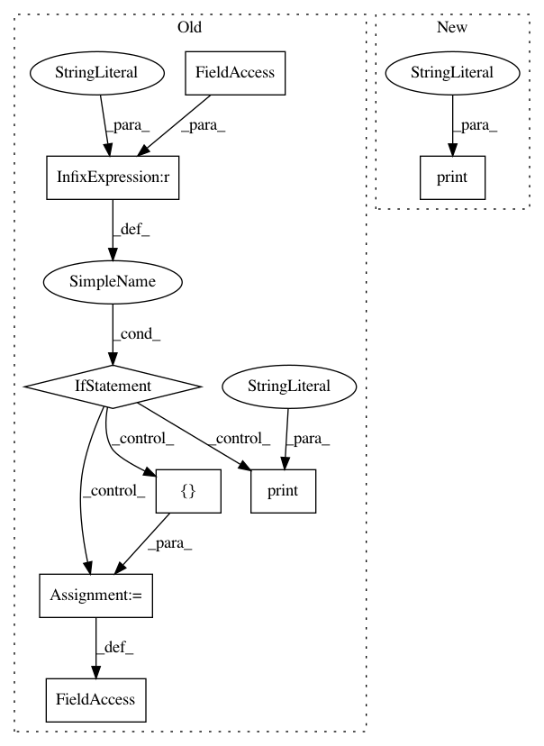

2728afcd57721b34f95ba575507a3db6c86c1f4c,tests/test_model_remote.py,,,#,151
Before Change
self.assertAlmostEqual(trace_length_max, trace_length_max_correct, places=0)
if __name__ == "__main__":
try:
file_path = os.path.dirname(os.path.realpath(__file__))
cpp_model = subprocess.Popen([os.path.join(file_path, "cpproblight/test_gum_marsaglia"), "tcp://*:5555"], preexec_fn=os.setsid)
cpp_model_with_replacement = subprocess.Popen([os.path.join(file_path, "cpproblight/test_gum_marsaglia_replacement"), "tcp://*:5556"], preexec_fn=os.setsid)
unittest.main(verbosity=2)
except KeyboardInterrupt:
print("Stopped")
except Exception:
traceback.print_exc(file=sys.stdout)
os.killpg(os.getpgid(cpp_model.pid), signal.SIGTERM)
os.killpg(os.getpgid(cpp_model_with_replacement.pid), signal.SIGTERM)
After Change
docker_client = docker.from_env()
print("Pulling latest Docker image: probprog/cpproblight")
docker_client.images.pull("probprog/cpproblight")
print("Docker image pulled.")
docker_client.containers.run("probprog/cpproblight", "/code/cpproblight/build/cpproblight/test_gum_marsaglia tcp://*:5555", network="host", detach=True)
In pattern: SUPERPATTERN
Frequency: 3
Non-data size: 8
Instances
Project Name: pyprob/pyprob
Commit Name: 2728afcd57721b34f95ba575507a3db6c86c1f4c
Time: 2018-02-21
Author: atilimgunes.baydin@gmail.com
File Name: tests/test_model_remote.py
Class Name:
Method Name:
Project Name: okfn-brasil/serenata-de-amor
Commit Name: 3baf62ba607a95dcb0d5971594389d3586286ef6
Time: 2016-12-06
Author: andresouzapinho@gmail.com
File Name: src/fetch_foursquare_info.py
Class Name:
Method Name:
Project Name: NervanaSystems/nlp-architect
Commit Name: 794bd558da80b65713b51a964ec61e7ef36d4bf2
Time: 2018-05-14
Author: peteriz@users.noreply.github.com
File Name: examples/intent_extraction/interactive.py
Class Name:
Method Name: